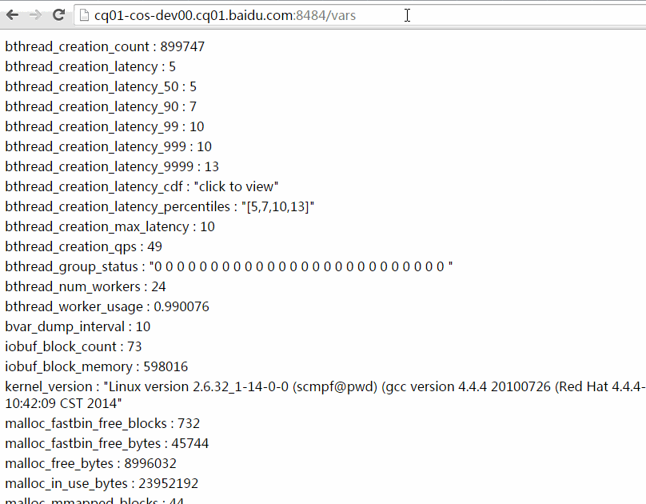
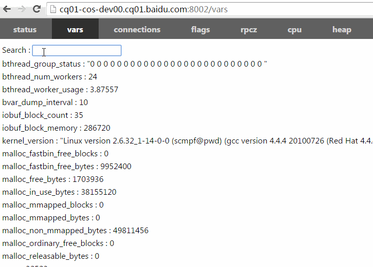
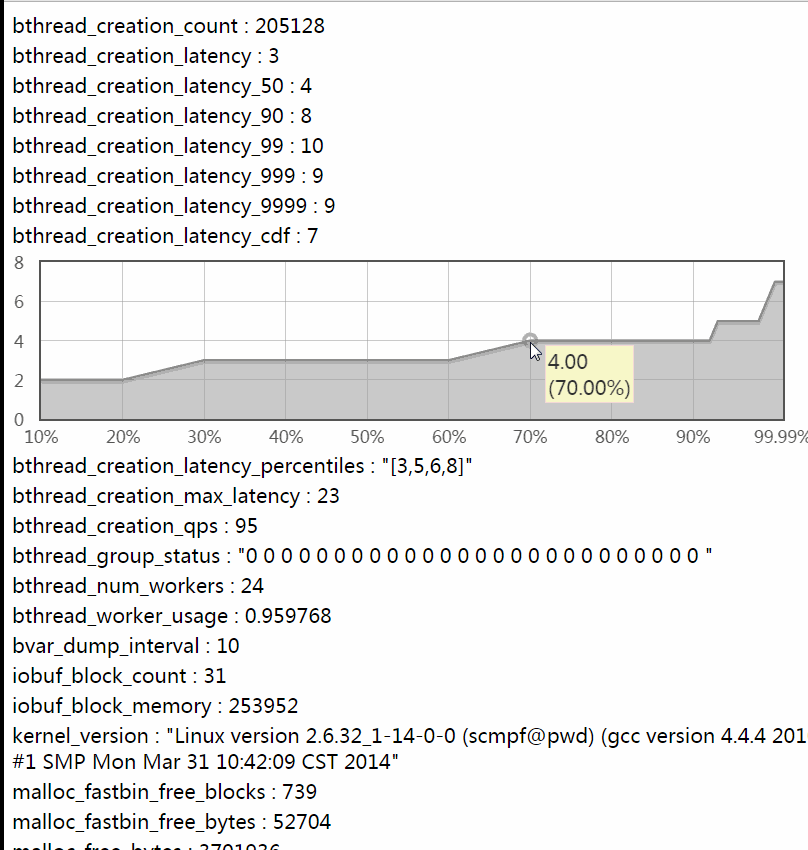
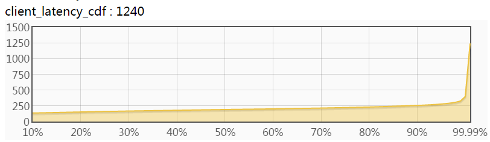
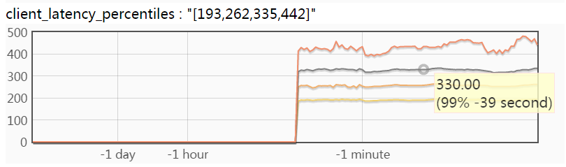
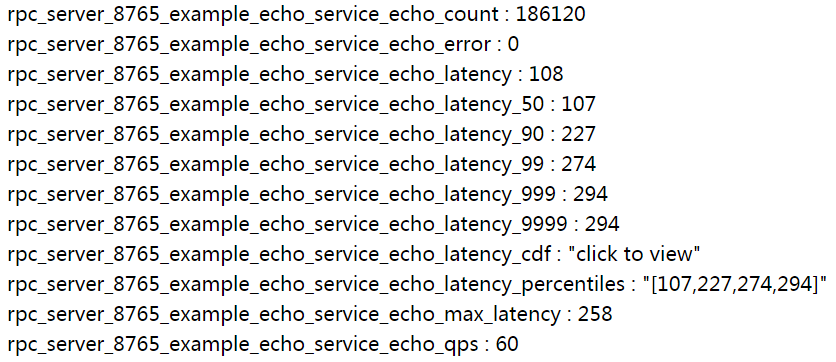
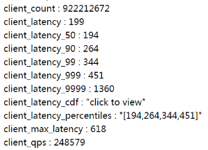

bvar 是多线程环境下的计数器类库，方便记录和查看用户程序中的各类数值，它利用了 thread local 存储减少了 cache bouncing，相比 UbMonitor（百度内的老计数器库）几乎不会给程序增加性能开销，也快于竞争频繁的原子操作。brpc 集成了 bvar，/vars 可查看所有曝光的 bvar，/vars/VARNAME 可查阅某个 bvar，增加计数器的方法参见 bvar 的说明。
brpc 大量使用了 bvar 提供统计数值，当你需要在多线程环境中计数并展现时，应该第一时间想到 bvar。但 bvar 不能代替所有的计数器，它的本质是把写时的竞争转移到了读：读得合并所有写过的线程中的数据，而不可避免地变慢了。当你读写都很频繁或得基于最新值做一些逻辑判断时，你不应该用 bvar。
访问 vars
/vars：列出所有曝光的 bvar。/vars/NAME：查询名字为 NAME 的 bvar。/vars/NAME1,NAME2,NAME3：查询名字为 NAME1 或 NAME2 或 NAME3 的 bvar。/vars/foo*,b$r：查询名字与某一通配符匹配的 bvar，注意用$代替?匹配单个字符，因为?是 URL 的保留字符。
以下动画演示了如何使用过滤功能。你可以把包含过滤表达式的 url 复制粘贴给他人，他们点开后将看到相同的计数器条目（数值可能随运行变化）：

/vars 左上角有一个搜索框，能加快寻找特定 bvar 的速度。在这个搜索框你只需键入 bvar 名称的一部分，框架将补上 * 进行模糊查找。不同的名称间可以逗号、分号或空格分隔：

你也可以在命令行中访问 vars：
$ curl brpc.baidu.com:8765/vars/bthread*
bthread_creation_count : 125134
bthread_creation_latency : 3
bthread_creation_latency_50 : 3
bthread_creation_latency_90 : 5
bthread_creation_latency_99 : 7
bthread_creation_latency_999 : 12
bthread_creation_latency_9999 : 12
bthread_creation_latency_cdf : "click to view"
bthread_creation_latency_percentiles : "[3,5,7,12]"
bthread_creation_max_latency : 7
bthread_creation_qps : 100
bthread_group_status : "0 0 0 0 0 0 0 0 0 0 0 0 0 0 0 0 0 0 0 0 0 0 0 0 0 0 "
bthread_num_workers : 24
bthread_worker_usage : 1.01056查看历史趋势
点击大部分数值型的 bvar 会显示其历史趋势。每个可点击的 bvar 记录了过去 60 秒、60 分钟、24 小时、30 天总计 174 个值。当有 1000 个可点击 bvar 时大约会占 1M 内存：

分位值
x% 分位值（percentile）是指把一段时间内的 N 个统计值排序，排在第 N x% 位的值。比如一段时间内有 1000 个值，先从小到大排序，排在第 500 位（1000 50%）的值是 50% 分位值（即中位数），排在第 990 位的是 99% 分位值（1000 * 99%），排在第 999 位的是 99.9% 分位值。分位值能比平均值更准确地刻画数值的分布，对理解系统行为有重要意义。工业级应用的 SLA 一般在 99.97% 以上（此为百度对二级系统的要求，一级是 99.99% 以上），一些系统即使平均值不错，但不佳的长尾区域也会明显拉低和打破 SLA。分位值能帮助分析长尾区域。
分位值可以绘制为 CDF 曲线和按时间变化的曲线。
CDF 曲线
下图是分位值的 CDF，横轴是比例（排序位置/总数），纵轴是对应的分位值。比如横轴 50% 处对应的纵轴值便是 50% 分位值。如果系统要求的性能指标是”99.9% 的请求在 xx 毫秒内完成”，那么你就得看 99.9% 那儿的值：

为什么叫它 CDF（Cumulative Distribution Function，累积分布函数）？当选定一个纵轴值 y 时，对应横轴的含义是”数值 <= y 的比例”，由于数值一般来自随机采样，横轴也可以理解为”数值 <= y 的概率”，即 P(数值 <= y)，这就是 CDF 的定义。
CDF 的导数是概率密度函数（PDF）。如果把 CDF 的纵轴分为很多小段，对每个小段计算两端对应的横轴值之差，并把这个差作为新的横轴，那么我们便绘制了 PDF 曲线，就像顺时针旋转了 90 度的正态分布那样。但中位数的密度往往很高，在 PDF 中很醒目，这使得边上的长尾很扁而不易查看，所以大部分系统测量结果选择 CDF 曲线而不是 PDF 曲线。
可用一些简单规则衡量 CDF 曲线好坏：一条缓慢上升且长尾区域面积不大的 CDF 便是不错的曲线。
分位值随时间变化的曲线
下图是分位值按时间变化的曲线，包含了 4 条曲线，横轴是时间，纵轴从上到下分别对应 99.9%、99%、90%、50% 分位值，颜色从上到下也越来越浅（从橘红到土黄）：

滑动鼠标可以阅读对应数据点的值，上图中显示的是”39 秒钟前的 99% 分位值是 330 微秒”。这幅图中不包含 99.99% 的曲线，因为 99.99% 分位值常明显大于 99.9% 及以下的分位值，画在一起的话会使得其他曲线变得很”矮”，难以辨认。你可以点击以 _latency_9999 结尾的 bvar 独立查看 99.99% 曲线。按时间变化曲线可以看到分位值的变化趋势，对分析系统的性能变化很实用。
brpc 自动统计的延时分布
brpc 的服务都会自动统计延时分布，用户不用自己加了。如下图所示：

你可以用 bvar::LatencyRecorder 统计任何代码的延时：
#include <bvar/bvar.h>
...
bvar::LatencyRecorder g_latency_recorder("client"); // expose this recorder
...
void foo() {
...
g_latency_recorder << my_latency;
...
}如果这个程序使用了 brpc server，那么你应该已经可以在 /vars 看到 client_latency、client_latency_cdf 等变量，点击便可查看动态曲线。如下图所示：

提示：如果你的程序只是一个 brpc client 或根本没有使用 brpc，并且你也想看到动态曲线，可以启动 dummy server 提供内置服务。